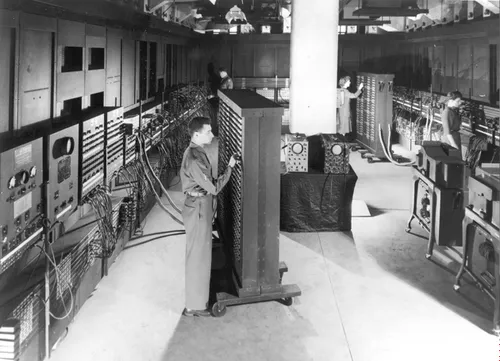
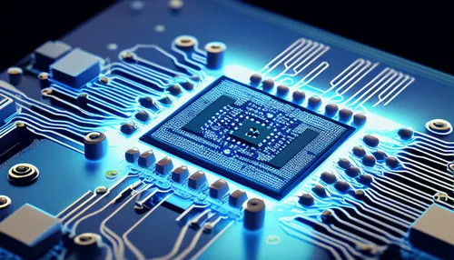
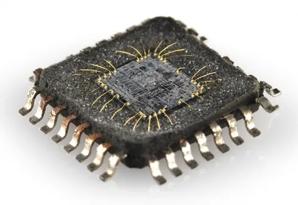
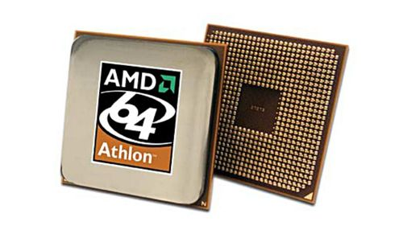
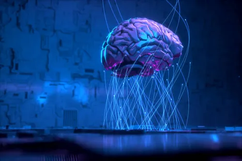

Computer Generation
First Gen
Vaccum Tube
The term "1st generation computer" refers to the earliest computers that were developed and used in the late 1940s and 1950s. These computers are often referred to as "first-generation" or "vacuum tube computers" because they relied on vacuum tube technology for their operation. Here are some key characteristics of 1st generation computers:
Second Gen
Transistors
Second-generation computers, developed in the late 1950s and throughout the 1960s, marked a significant advancement in computer technology compared to their first-generation predecessors. Key characteristics of second-generation computers include:
Third Gen
IC
Third-generation computers, developed in the 1960s and 1970s, represented a significant advancement over their predecessors in terms of technology, size, and capabilities. Key characteristics of third-generation computers include:
Fourth Gen
Microprocessors
Fourth-generation computers, developed in the late 1970s and throughout the 1980s, brought about significant advancements in computer technology and design compared to their predecessors. Key characteristics of fourth-generation computers include:
Fifth Gen
AI
Fifth-generation computers are a term that has been used to describe a potential future generation of computers, characterized by advanced capabilities and technologies that extend beyond what we typically associate with contemporary computers. As of my last knowledge update in September 2021, fifth-generation computers were more of a concept and a vision for the future rather than a reality. However, I can provide some insights into the ideas and expectations associated with fifth-generation computers:
